Writing a program, is a lot like
creating a recipe, kind of like this government recipe for Fried Snake
from the Guam Division of Aquatic and Wildlife Resources.
Writing a program, is a lot like
creating a recipe, kind of like this government recipe for Fried Snake
from the Guam Division of Aquatic and Wildlife Resources.
When you create a recipe you define two things:
- the ingredients you need: a skinned snake, a cup of sherry, black pepper, lemon juice and so on.
- the procedures for preparing and cooking those ingredients; marinate, drain, dredge, fry and drain.
Programs are similar. Instead of ingredients, you define variables to hold the data that your program will use. Instead of a list of chopping, dicing and baking instructions, you define a set of procedures and functions to process the data in those variables.
In object-oriented languages like Java, we usually use the term method to refer to both procedures and functions. Those are the terms used in your textbook. I'm going to use the older, and more general terms though, to refer to specific kinds of methods:
- procedures to refer to methods that carry out an
action, like the
println()procedure in theConsoleProgramclass, and - functions to refer to methods that return a value
to the caller, and that can be used to initialize variables
or as part of an expression, like the
readLine()function or the various functions in theMathclass.
In previous lessons, you learned
how to call procedures like println() and
functions like readLine(). You also learned how to
define the run() and main() methods.
In this lesson you'll learn how to write your own procedures,
and not simply call or redefine preexisting methods, like run().
Before you learn how to write your own methods, though, let's get some vocabulary out of the way. We'll start by looking at three kinds of method relationships.
Method Relationships
You all know about human relationships: your mother and father, brothers or sisters, children and maybe grandchildren are all family relationships. But, you also have different kinds of relationships with other people. You're a resident in a particular city, a citizen of a particular country, and a student in a particular class. You may be an employee or an employer, have a girlfriend or boyfriend. You might belong to a particular religious or ethnic group. All of these are different kinds of human relationships.
When it comes to methods, one way to categorize them is to consider method relationships. Here are three different kinds that you should be aware of.
Inherited Methods
Every child class automatically inherits all of its parent's public methods. These inherited methods may be used just as if they were defined inside the child class.
The ConsoleProgram class, for instance, does
not define its own version of the println()
method, but, since one of its ancestor classes (acm.program.Program)
defines a println() method, it can be used in
the ConsoleProgram class, or any subclasses of
ConsoleProgram, such as the ACM programs that
we've written in this class.
Most of the classes in Java inherit some methods from their ancestors.
Here, for instance, are just some of the methods that the
ConsoleProgram class inherits from the Program class:
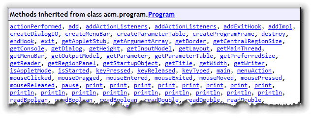
Inherited methods are the methods that you'll call when you write your own progams.
Overridden Methods
Some inherited methods, (such as the println() procedure
which you've used in previous lessons), work exactly
as you'd expect; you don't need to change
them at all, you just use them.
Other methods, however, are designed to be customized
when you create a new class. The run()
method, for instance, which you've used to display output and
get input, must be different for every single program that
is written. In previous lessons, you've redefined the
nobr>run() method for each program you've written.
Redefining such an existing method, is called overriding
the method. When you override a method, you have
to use exactly the same signature that the original
method used—you can't change it at all. This means that if you
create a method named Run() inside your program,
it won't override the original run()
method, and so it won't be called when your program runs.
Overloaded Methods
When a method is defined, the definition specifies
exactly what kind of parameters can be used to customize the
behavior of that method. For instance, when you call the
Math.sqrt() function, you must pass a single
parameter, which must be a numeric value.
For some methods, this is a little limiting. When calling the
readLine() function for instance,
sometimes you'd like to supply a prompt, and sometimes you'll
like to skip the extra verbiage. Java lets you do that by supporting
overloading; overloading allows you to create different
functions and procedures that each have the same name, but take a
different number of, (or different types of),
parameters.
Here, for example, is a fragment of the Javadocs for the
ACM Program class showing a few of the overloaded
versions of the println() procedure:
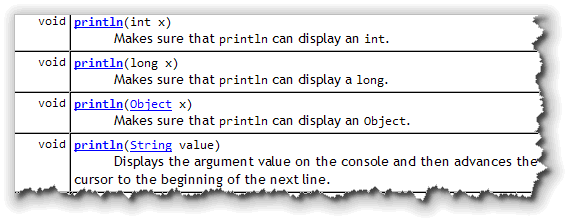
Note that you can pass the
println() method
an int, a long, an Object
and a String. In fact, though it's not shown in
this screenshot, you can even pass nothing at all.
You can do this because each one of these is a different overloaded method. You'll learn how to write overloaded methods later in this course.
Regular Methods
In addition to inherited, overridden, and overloaded methods, most classes have regular, programmer-defined methods. Regular methods are designed to accomplish a single, simple task, and help to make your classes more flexible and easier to understand.
Up until now, we've written programs where all of the
instructions are in a single run() method. As
your programs become larger, though, your code will become
much harder to understand, modify and debug.
A better solution is to divide the work into different
named sections of code or procedures. To carry our
recipe metaphore a little further, instead of having a single
run() method to cook your snake, you could divide
the program into marinate(), dredge(),
fry() and drain() methods.
Such simple, helper methods make the overall program easier to understand and easier to modify and are part of the concept of structured programming. Let's take a brief look at that before we go on.
Structured Programming
By the late 1960s, high-level languages were in full-flower, and there were a lot of them. Programmers had become monumentally more productive; at least, they were churning out a whole bunch of code. A decade earlier, a 20,000 line program was huge. Now programmers were thinking in terms of hundreds-of-thousands, and even millions of lines of code.
Despite the increased productivity, however, there was a small problem: the portions were huge but the quality left a bit to be desired. The Cold-War was going full-steam-ahead, and the government couldn't help but notice that when they ordered a new software system, the software:
- Cost a whole lot more than promised.
- Failed to arrive when promised
- Failed to work if it did arrive
 The government, and the military in particular,
(what with
$900 toilet seats and all), doesn't enjoy a reputation
as an especially savy consumer.
(Undoubtably this
repuation is undeserved.)
The crisis in software
quality, however, made everyone sit up and take note,
and, in the late 1960s, the NATO countries sponsored
a pair of conferences which gave rise to the term Software
Engineering. (Click here if you'd like to read the original
reports from the 1968 Garmisch and 1969 Rome conferences. They're
both quite interesting, as is Brian Randell's history of how the
reports got written.)
The government, and the military in particular,
(what with
$900 toilet seats and all), doesn't enjoy a reputation
as an especially savy consumer.
(Undoubtably this
repuation is undeserved.)
The crisis in software
quality, however, made everyone sit up and take note,
and, in the late 1960s, the NATO countries sponsored
a pair of conferences which gave rise to the term Software
Engineering. (Click here if you'd like to read the original
reports from the 1968 Garmisch and 1969 Rome conferences. They're
both quite interesting, as is Brian Randell's history of how the
reports got written.)
The questions the conference attendees asked were simple:
- Why does software cost more than is planned?
- Why doesn't software work the way is was designed?
- Why aren't software projects completed as planned?
In other words—to paraphrase Professor Henry Higgins' famous line from My Fair Lady:
In many ways, Software Engineering was kind of a bust: software is still late, bloated, and buggy. Despite that, some real good came out out the conference. A diverse group of people, around the world, now began to look at how to build good software. Before this, everyone was just kind of amazed that it could be done at all.
These efforts, and their results, are often called structured programming. Structured programming is important in its own right, but also because Object-Oriented Programming (OOP) builds upon the principles discovered by structured programming.
Procedural Decomposition
The first principle in structured programming is that little programs are easier to write, understand, and maintain, than are big programs. This principle is called "divide and conquer", or "procedural decomposition".
Structured Programming encourages programmers to organize their programs as a hierarchy of small sub-programs (often called procedures or functions) that each perform one small part of a task like this:

This looks almost like our recipe example, doesn't it?
User-Defined Procedures
As you recall, some methods perform an action, and some methods calculate or retrieve information. In many languages, the first type is known as a procedure and the second is known as a function. Java hasn't formally adopted these terms, but they are commonly used in the Computer Science world, so you should be familiar with them.
We'll start out in this lesson, learning to write "simple" procedures—methods that carry out an action, and that don't require any additional information to carry out their task. Then, next week, we'll turn our attention to writing more complex methods: those that accept parameters, and those that return a value.
Drawing an Abacus
Here's an application named Abacus1 that calls the
ConsoleProgram println() procedure inside the
run() method to display a simple ASCII-Art picture
of a Chinese Abacus.
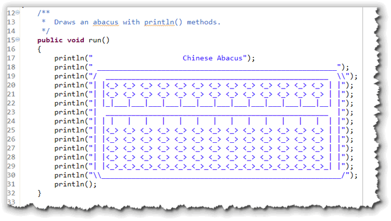
The Abacus program contains definitions for just two methods,
run() and main(), the boiler-plate code
written by the Eclipse ACM Console Program template. All of your
instructions are inside the run() method.
Top-Down Design
Let's start by spliting the program into individual user-defined methods.
In Eclipse, I just copied the file Abacus1.java and renamed the
copy Abacus2.java. Then, inside the run() method
I replaced the individual println() statements with the
two commands printTopHalf() and printBottomHalf()
as shown here:
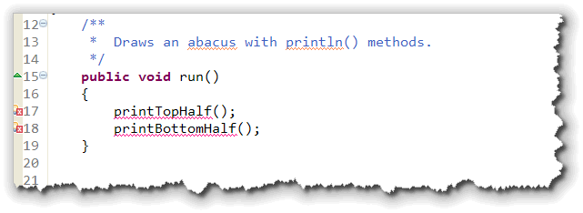
To call a simple method or user-defined command from within the class where it is defined, you just:
- use the name of the method
- followed by an empty set of parentheses
- followed by a semicolon
This is called top-down design. Rather than placing the individual
details inside the run() or main() method, I listed the
individual steps that I want to carry out at the highest-level possible. If I
were writing a program called FriedSnake, then my run()
method may have looked like this:
gatherIngredients();
marinate();
dredge();
fry();
drain();
Note that these are not commands in the Java library, but commands that I've made up to simplify the program that I'm trying to write. A procedure is simply a user-defined command.
Defining the Methods
As you can tell from the picture, Eclipse isn't at all happy that
I've called my own commands or procedures inside the run()
method. That's because, even though I've called the methods,
I've yet to define them. Here's how you do that.
First, a method is defined inside the body of the class that contains it, never inside another method. To define a new procedure or command, you simply add a method definition that has these five parts. (We covered these briefly back in Unit 2).
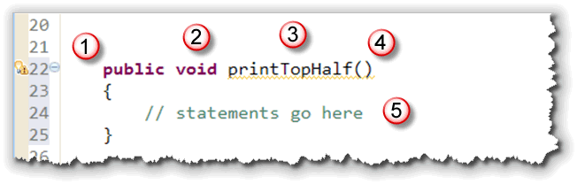
1. Access modifier
The access modifier determines who can call the method. Normally, you'll make your methods
public, although in this case, you could make the access specifierprivate, since it is only being used by therun()method in the same class.2. Return type
The return type is used for methods that produce a value, so that the method can be used in an expression. Procedures or simple methods don't return a value, they just carry out an action, so we use the "anti-type" named
voidfor this element.3. Name
The name of our first method is
printTopHalf()and the name of the second method isprintBottomHalf(). Method names must follow the rules for Java identifiers, just as attributes do. Here, we're also following the Java naming conventions, starting our method names with a lowercase letter and using uppercase letters to begin each embedded word.4. Parameter list
Because the simple procedures we're discussing don't take parameters, the parameter list is empty. You still have to include the parentheses, however.
5. Method body
The method body is enclosed in braces { }, following the parameter list. Since we don't pass any parameters to either method, we simply use the
println()to display the appropriate portion of the abacus.
The actual statements inside the printTopHalf() method would be
the same as those in the run() method, as shown here:
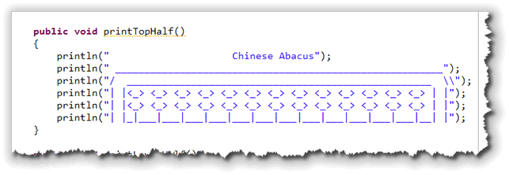
Two Eclipse Shortcuts
Eclipse has a couple of tricks that can make this a little easier. First,
remember that every method should have a comment. If you simply place
your cursor on the line immediately preceding the new method definition,
and then type "slash-star-star" (/**) and press ENTER,
Eclipse will insert the method comment template shown below, which
you can then modify:
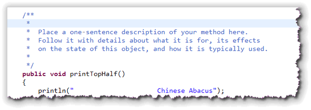
Even better, if you hover your cursor over the error message
shown when you initially called the method, Eclipse will display a
Quick Fix popup window like that shown here:
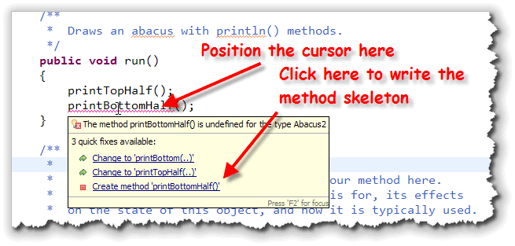
When you click on the line that says "Create method printBottomHalf()" then Eclipse will write the skeleton that you would normally have to write by hand. Here's what that skeleton looks like: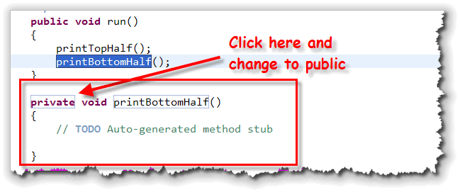
Notice that when Eclipse writes a method skeleton for your, some of the
words are surrounded by a little marquee. These are actually fields that
you'll often want to manually change by clicking and modifying them. I
normally change the private to public as well
as sometimes changing the return type for functions.
You cannot use procedures as part of an expression, like you can when calling a function.
Make sure you understand the difference between defining a procedure and calling, (or invoking), a procedure.
A procedure definition:
- Always has a return type before the name
- Never ends in a semicolon
- Is followed by a pair of braces
Calling a procedure:
- Never has a return type before the name
- Always ends in a semicolon
Procedural Decomposition Revisited
"OK", I can hear you thinking, "exactly what was the point of using procedures? The code certainly isn't shorter or easier to understand? The version with everything in the run() method was clearer!"
And, I have to agree with you. The point of the preceding section wasn't to show you a great application of procedures, but to show you the syntax of procedure definitions and procedure calls in the simplest possible context.
Now we can look at one of the principle reasons for using procedures: eliminating redundancy. Procedures allow us to place commonly used actions or calculations in a named block of code and then to simply use that new name instead of repeating the same block of code over and over again.
Of course, you've been taking advantage of this in every
program you've written. The code for printing a simple integer
to the console, without using any procedures, is more than
one hundred lines of Java code. Imagine if you had to repeat
that same code, every time you wanted to print a value on
the console, instead of simply using the print()
procedure.
Another Look at the Abacus
So, let's take another look at the Abacus program. If you look
at the original, you'll notice that there are six lines of
output that are completely identical:
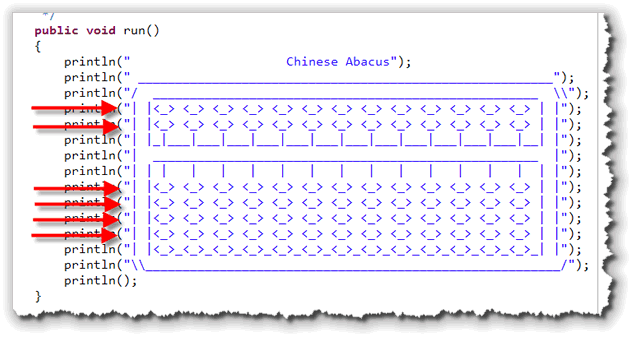
In Abacus3 we can extract those methods into a single
method definition named printBeads() that looks like this:
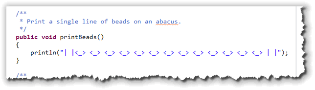
Then, we can call theprintBeads() method instead of
repeating the same code over and over, like this: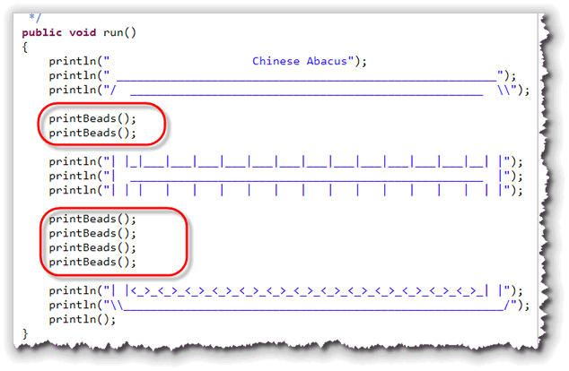
Stepwise Refinement
Of course, we still have redundancy, or repeated lines of code. The
run() method now contains six calls to
printBeads(). You'll find that's often true; you'll write
a method to eliminate redundancy and then find that you still have
more work to do. This is known as stepwise refinement and it's
part of a strategy of iterative development. As you
learn to program you should try to:
- Make simple changes, so you won't get confused.
- Test or evaluate your changes and see if there is more redundancy you can eliminate.
- Repeat the first two steps until there are no more improvements to be made.
Adding More Methods
If you look at Abacus3, you'll see that printBeads() is
called twice in the top portion, and four times in the bottom portion. Let's
put the principle of stepwise refinement to work, and eliminate the redundancy
in the top portion. We can do that by replacing the two adjacent
calls to printBeads() with a single call to a new method named
printTwoBeads() like this:
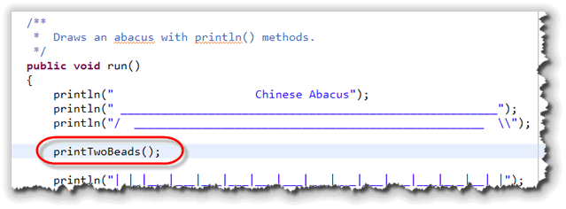
To define the printTwoBeads() method, instead of
writing two println() statements, we just call the existing
printBeads() method twice like this:
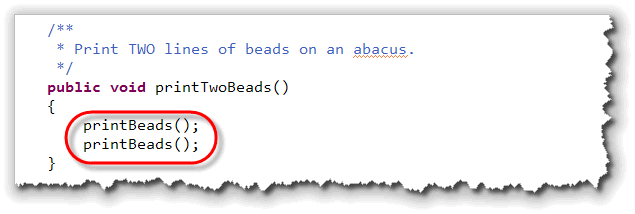
Notice that therun() method calls printTwoBeads()
and that printTwoBeads calls printBeads().
(And, of course, printBeads() calls the println()
method from the ConsoleProgram class.)
printFourBeads()
We can do the same thing with the four adjacent calls to
printBeads() in the bottom half of the run() method,
replacing them with a single call to printFourBeads() like this:
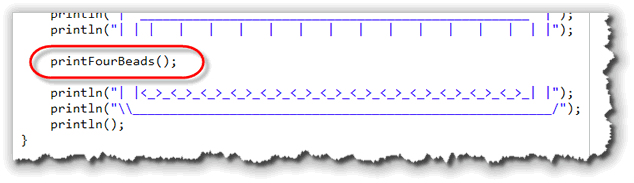
And similarly, we can defineprintFourBeads() by using
the printTwoBeads() method we just wrote, like this: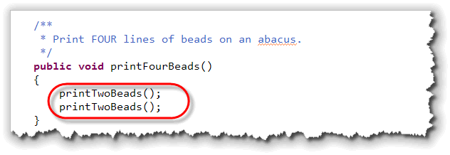
Now the run() method calls the printFourBeads() method,
printFourBeads() calls the printTwoBeads() method and
printTwoBeads calls printBeads(). One way of looking
at this relationship is by using a hierarchy chart like that shown in
the Structured Programming section of this lesson. Here is a complete hierarchy
chart for the Abacus3 program (starting at the run() method):
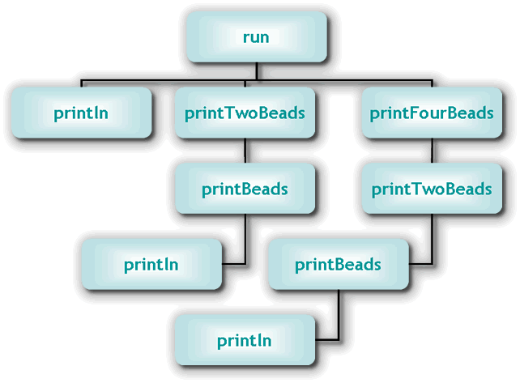
Coming Up...
In this lesson you learned about the different kinds of methods you'll use in Java, and how to write your own simple, user-defined methods. You also learned about the structured programming concepts of procedural decomposition, stepwise refinement and iterative development, and applied them to a simple program.
This is the last lesson this week. Check the Exercises page for an opportunity to apply what you've learned.